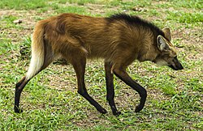
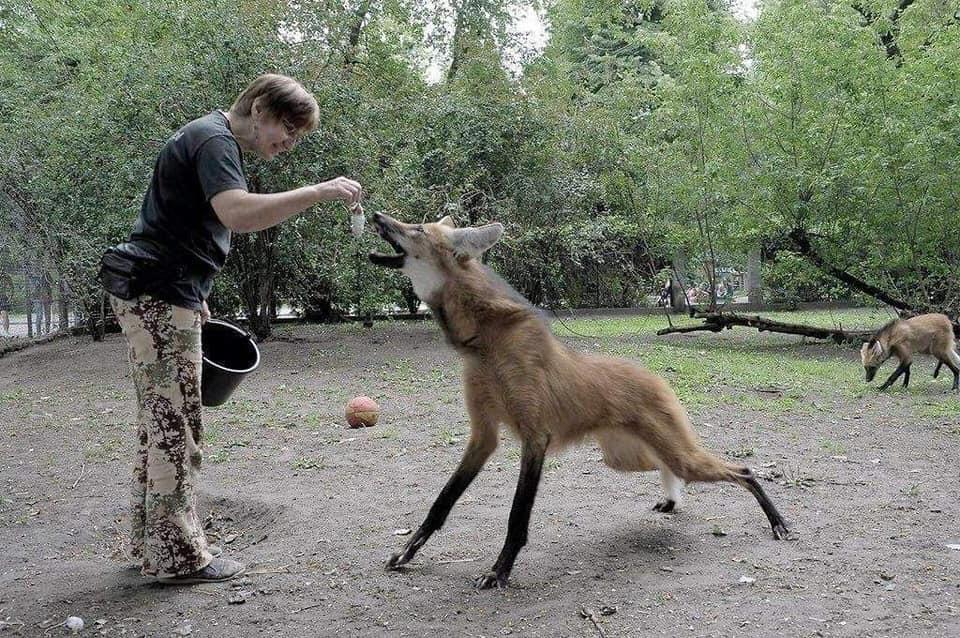

A maned wolf is a large, red-fox-like canid found in South America, particularly in Argentina, Brazil, Peru, and Paraguay. Though it resembles a red fox, it is neither a fox nor a wolf. It is the only species of its genus. It weighs between 44-66lbs, and can be up to 43in tall at its shoulder.

The maned wolf's closest living relative is the bush dog, while having a distant relationship with all other South American canines. They're also solitary animals, besides meeting during mating season. Even though it is a sizeable animal, it was mistaken in the past to be a threat to cattle, sheep, and pigs, though that is now known to be false. They are also generally shy and flee when spotting humans.

| Category | Description |
|---|---|
| Scientific Name | Chrysocyon brachyurus |
| Habitat | Grasslands, with scattered bushes and trees |
| Diet | Fruits, vegetable matter, small and medium animals, fish, and even insects |